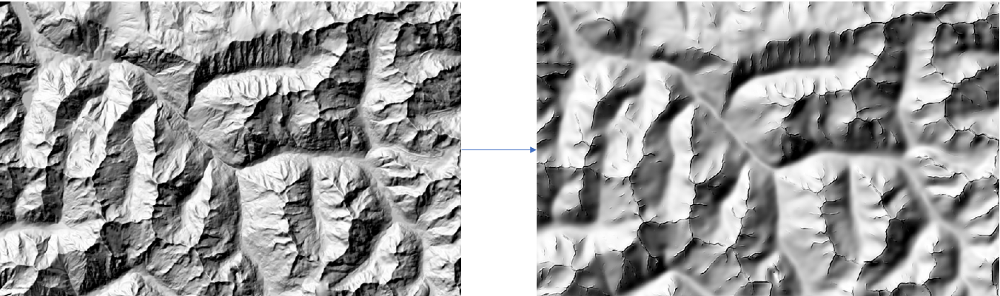

User Manual#
This user manual provides detailed guidance on using the key functions of the dem_lic package. These functions enable users to generalize Digital Elevation Models (DEMs), compute curvature rasters, and apply advanced smoothing techniques. Below, you will find descriptions, usage instructions, and examples for each function.
Introduction#
The dem_lic package offers tools for DEM generalization and processing. The main entry point is the generalization function in main_lic_extended, which orchestrates the generalization pipeline. Additionally, standalone functions in the morpho_dem module allow users to perform specific tasks such as computing maximal curvature or applying selective Gaussian blur.
Functions Overview#
Generalization Function#
main_lic_extended.generalization
The main entry point for DEM generalization. This function validates inputs, sets parameters, and processes the DEM in overlapping blocks.
Parameters:
MNT_input_path(str): Path to the input GeoTIFF file containing the DEM.output_path(str): Path to the output GeoTIFF file.block_size(int, optional): Size of processing blocks in pixels. Default is 2000.overlap(int, optional): Size of the overlapping region between blocks in pixels. Default is 20.Other optional parameters include
sigma_max,slope_threshold,num_bins,min_area,num_steps,n_iterations,sigma_blur_maxcurv, andkfor tuning the algorithm.
Example:
from dem_lic.main_lic_extended import generalization
generalization(
MNT_input_path="input_dem.tif",
output_path="generalized_dem.tif",
block_size=2000,
overlap=20
)
Maximal Curvature Function#
morpho_dem.calculate_maximal_curvature
This function calculates a raster of maximal curvature from a DEM.
Parameters:
input_dem(numpy.ndarray): Input DEM as a NumPy array.cell_size(float): Resolution of the DEM grid in the same units as the DEM values.
Returns:
numpy.ndarray: A raster array representing the maximal curvature.
Example:
from dem_lic.utils.morpho_dem import calculate_maximal_curvature
curvature = calculate_maximal_curvature(input_dem, cell_size=10.0)
Adaptive Gaussian Blur Function#
morpho_dem.fast_adaptive_gaussian_blur
Applies a selective Gaussian blur to a DEM based on the maximal curvature.

Parameters:
input_dem(numpy.ndarray): Input DEM as a NumPy array.curvature(numpy.ndarray): Raster of maximal curvature for selective smoothing.sigma_max(float): Maximum width of the Gaussian kernel.
Returns:
numpy.ndarray: A smoothed DEM.
Example:
from dem_lic.utils.morpho_dem import fast_adaptive_gaussian_blur
smoothed_dem = fast_adaptive_gaussian_blur(input_dem, curvature, sigma_max=5.0)
Relative Altitude Function#
morpho_dem.calculate_relative_altitude
Computes the relative altitude for each pixel in a DEM, which can be used for further analysis or visualization.
Parameters:
input_dem(numpy.ndarray): Input DEM as a NumPy array.
Returns:
numpy.ndarray: A raster array of relative altitudes.
Example:
from dem_lic.utils.morpho_dem import calculate_relative_altitude
relative_altitude = calculate_relative_altitude(input_dem)